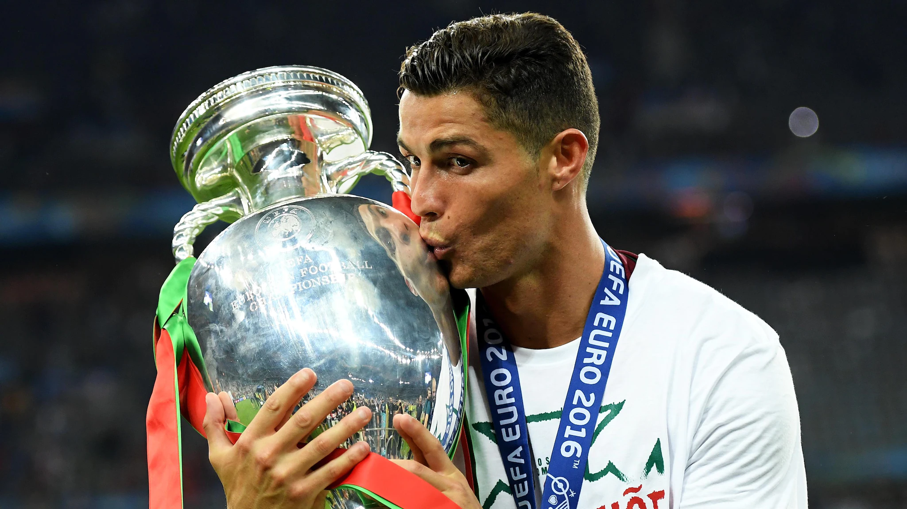
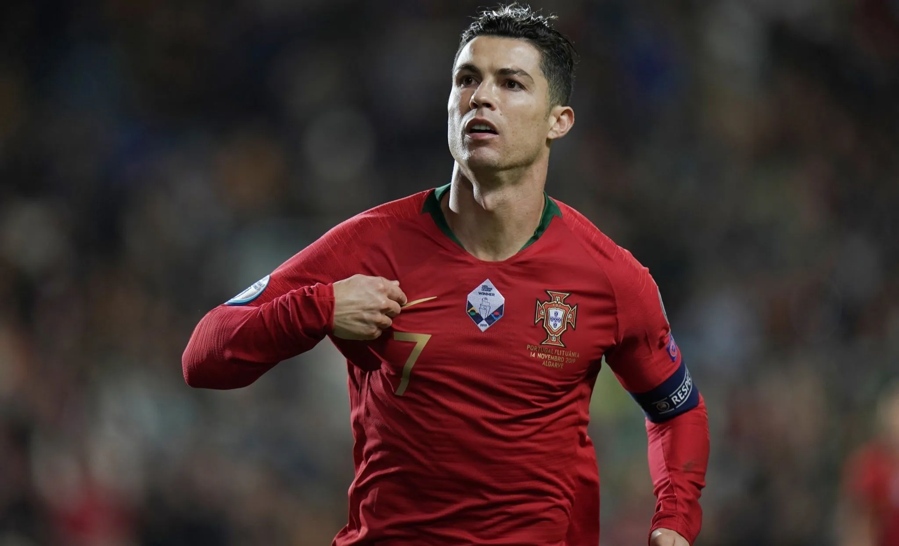

Cristiano Ronaldo dos Santos Aveiro nació en São Pedro, Funchal, en la isla portuguesa de Madeira. Creció en el área de Santo António, uno de los barrios más pobres de Portugal. Su nombre, Ronaldo, es un homenaje a Ronald Reagan, presidente de Estados Unidos, debido a la admiración de su madre por el actor y político estadounidense. Es el cuarto hijo de Maria Dolores dos Santos Viveiros, cocinera, y José Dinis Aveiro, jardinero municipal y utilero. Su bisabuela paterna era de la isla de São Vicente, Cabo Verde. Tiene un hermano mayor y dos hermanas mayores, una de ellas es cantante. Su madre pareció abortar durante el embarazo debido a la difícil situación económica, la adicción al alcohol de su padre y la cantidad de hijos que tenía. El médico se negó a realizar el procedimiento. Criado en una familia católica en condiciones humildes, compartió habitación con sus hermanos. En su adolescencia, destacó en el Andorinha, su primer club, donde su padre trabajaba como utilero. A los diez años, equipos de Madeira se interesaron en él, pero se unió al CD Nacional. A los quince años, se enfrentó a un problema cardíaco, sometiéndose a una cirugía láser para resolverlo. A pesar de las dificultades, su talento lo llevó a fichar por el Sporting Clube de Portugal, alejándose de su familia. Su traslado a Lisboa fue difícil, pero contribuyó a su formación personal y futbolística. Superó un problema de corazón y comenzó a entrenar con éxito, marcando el inicio de su ascenso en el mundo del fútbol.

En 2003, su excepcional actuación con el Sporting llamó la atención de varios clubes europeos de renombre, y finalmente fichó por el Manchester United. Bajo la dirección de Sir Alex Ferguson, Ronaldo floreció en el United, ganando múltiples títulos de la Premier League y una Liga de Campeones de la UEFA. En 2009, se trasladó al Real Madrid por una cifra récord en ese momento. En el club español, se convirtió en una verdadera leyenda, rompiendo récords de goles y ganando cuatro Champions League de las cuales tres fueron consecutivas. En 2018, se unió a la Juventus en Italia, donde continuó demostrando su capacidad goleadora llevando al equipo a ganar dos Serie A, dos Supercopa de Italia y una Copa de Italia. En 2021, sorprendió al mundo del fútbol al regresar al Manchester United, club en el que había alcanzado la fama mundial. Su regreso fue recibido con entusiasmo por los aficionados. Lamentablemente no tuvo mucho exito y por ciertas diferencias con el entrenador y la falta de apoyo del equipo y sus compañeros hacia el debido al mal estado que se encontraba por el fallecimiento de su hija decide abandonar el club yendo al club árabe Al Nassr el 1 de enero de 2023, equipo con el cual se consagró camepón de la Copa de Campeones Árabe. En la selección nacional de Portugal, Ronaldo ha sido una figura central, liderando al equipo en múltiples competiciones, incluyendo la Eurocopa en 2016 y en la Nations League en 2019 consagandose campeón de dichas competiciones y consiguiendo los primeros títulos internacionales en la historia d la selección de Portugal. Ha superado varios récords internacionales de goles y ha dejado una marca indeleble en el fútbol mundial. Cristiano Ronaldo es conocido por su impresionante combinación de velocidad, agilidad, fuerza física y habilidad de disparo. Ha sido un modelo a seguir para muchos jóvenes futbolistas y ha utilizado su éxito para apoyar causas benéficas y filantrópicas. Su legado en el fútbol trasciende sus logros individuales y ha dejado una huella duradera en la historia del deporte.

